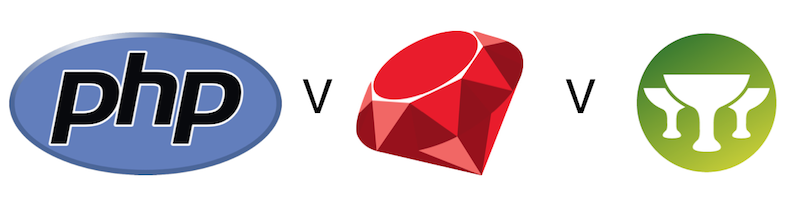

Project Specific Research
Platform
There are a number of different platforms that we could host our application on, for example we could create a mobile application or a website. The client decided that this decision would be down to us and so we researched into both in order to help make a decision.
The development of a mobile app would require knowledge of development for specific operating systems such as iOS, Android and Windows 10 Mobile. We would then have to decide whether to create a cross-platform application or one for a single operating system. For the problem we are required to solve, a cross-platform app would be most useful and therefore we would have to look into technologies for this. Furthermore, a mobile app would require our end users to install the app directly onto their device which could reduce the number of people using the app.
The development of a web app would require knowledge of web development frameworks such as bootstrap, and languages such as HTML, CSS and JavaScript. Creating a web app would mean we wouldn’t need to worry about different operating systems and would greatly increase the number of people our application would be available to. It also meant that whilst the app could be used on a desktop, if created to be mobile friendly, it could also be used on mobile.
We summarised our findings in order to come to a decision:
| Platform | Prior Experience | Reachability | Decision |
|---|---|---|---|
| Mobile App | Minimal | Specific mobile operating systems | Will not use |
| Web App | Good | All operating systems | Will use |
We had decided that our application would be a website. We thought that this would be a better solution to something like a mobile app as we were more confident with building web apps and integrating databases with them. It would also be more accessible to the client as we can easily host a website and make sure it is compatible on a number of different platforms.
Frameworks & Tools

Now that we had decided to build a web app, we had to decide on any Frameworks and Tools that we would use. There are a number of options we could use for tools and frameworks to assist us in development of the application.
For example, if we chose PHP - a language we are familiar with, and which is already used for the core OpenEyes system - we could use the PHPStorm Integrated Development Environment (IDE) by JetBrains. This would be a familiar working environment as some members of the team have already used it, and it is similar in functionality and use to the IntelliJ Java IDE. However, PHP is a language which may have many undesirable complications such as security vulnerabilities caused both by the language itself and by how easy it is to write bad code using it.
Another option is known as Ruby, or more specifically Ruby on Rails - a language with a clear interface and plenty of resources with which to learn about, and which has widespread use, but which we do not have any pre-existing knowledge or understanding of. This, too, has a JetBrains-produced IDE named RubyMine, which gets around the issue of having to learn a new development environment interface.
An additional choice would be Grails - built on a foundation of Groovy (which itself was born out of Java), it follows similar design principles to Ruby, placing emphasis on sensible defaults that only need to be modified for unconventional sections of the application, taking the work out of web developers' hands. This can be written and tested in IntelliJ directly, reducing the amount of software we need to download to develop this project.
During research, we spoke with our client who suggested that we not use PHP because of his historical experience with the language being negative. This was initially a concern becaue PHP has the advantage of being fairly simple to write, but as research went on it became clear that it was difficult to write PHP code without bugs or exploits, justifying his point of view.
We therefore summarised our findings in order to make our decision:
| Platform | Prior Experience | Comments | Decision |
|---|---|---|---|
| Ruby on Rails | None | Clear interface, plenty of resources available | Will use |
| PHP | Good | All operating systems | Will not use |
| Grails | None | Similar to rails, takes work out of web developers' hands | Will not use |
Once we had decided on using Ruby, we had to choose any other frameworks we would be using for the development of our application. For example, we could use Bootstrap in order to easily add styling to our web app, making it look professional and easy to use. We could also use things such as Sass and Googles Materialize and so we researched each of the different frameworks and summarised them in the table below before making our final decision.
| Framework | Prior Experience | Comments | Decision |
|---|---|---|---|
| Bootstrap | Very Good | Good documentation available, easy to integrate with Rails | Will use |
| Sass | None | Good documentation, not as much as bootstrap | Will not use |
| Materialize | None | Similar to Bootstrap, but relatively new so not as much documentation | Will not use |
We had therefore decided to use Bootstrap to add styling to our rails application and were therefore ready to start the devlopment stage, starting with some experimentation.